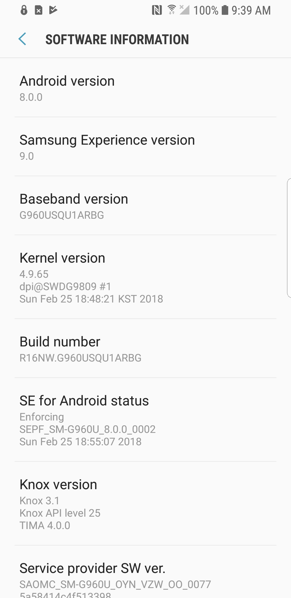
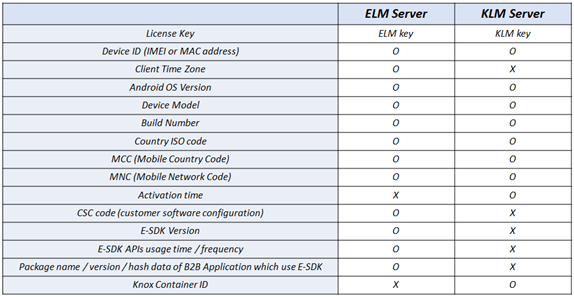
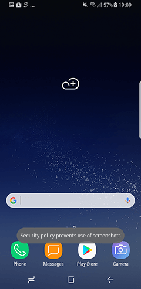
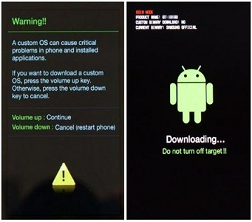

Knox Platform for Enterprise frequently asked questions
Last updated July 26th, 2023
Before purchase FAQ
To find out what version of Knox Platform for Enterprise your device is running, go to: Settings > About Device > Software Information > Knox Version.
This is a screenshot of the device menu containing the Knox version. Here, we see that Knox 3.1 is listed under Knox version.

Looking for more information?
- See Knox on Android for a list of features available in each release of Knox.
Please visit the Knox Supported Devices page to see a list of currently supported devices.
Attestation is a process that verifies the integrity of a device. It can check if a device has been rooted or is running unauthorized firmware. You might use this feature to ensure you are not handling private or confidential data on a device that might be compromised and be vulnerable to malware.
All Knox devices, beginning with the Galaxy Note 3, support attestation. Devices older than Galaxy Note 3 do not support attestation.
For more information
-
How attestation works: Knox White Paper
-
How the Knox platform works: Knox White Paper
The Samsung Knox platform has out-of-the-box Single Sign On support. You need to sign on only once to authenticate yourself on a device.
App developers can use Samsung’s SSO API to authenticate their app users. Knox 2.0 introduces support for a Kerberos-based SSO API in addition to Samsung’s original SSO API.
No, there is no limit to the number of apps that can be installed or used in the container.. The number of apps that can run within a container is only limited by the CPU and RAM of the device.
Samsung Knox Platform for Enterprise (KPE) extends the core functions embedded in the Android operating system, protecting Samsung devices with advanced security and management features. A license is needed to activate Knox Platform for Enterprise on a device.
Starting July 1, 2021, Samsung provides you with KPE Premium (Commercial) licenses at no cost. All Premium KPE licenses (KPE-Premium and KPE-Customization, both Cloud and On-Premise) are affected by this new KPE policy. Knox Dual Data-At-Rest (DualDAR) and Knox Universal Credential Management (UCM) capabilities aren’t included in this policy change. These solutions remain separate, paid licenses for those customers that require them.
For more information about KPE licenses, see Knox Platform for Enterprise licenses.
There is one type of Knox Workspace license: two-yearly, based on its billing period type. This license expires two years after its activation date. If the license is not extended with an extension order and expires, depending upon the device’s OS, two kinds of user behaviors can happen:
-
Android R OS and higher — For devices running Android R OS and higher, the Work container can be used, but KPE APIs can no longer be called, causing IT admins’ inability to apply KPE policies until the license is activated again.
-
OS lower than Android R — For devices running an OS lower than Android R, the Work container gets locked and KPE APIs can no longer be called. But the data inside the container are not removed, and the user re-gains access to the container and data after license is extended or reactivated.
Note
Some Q OS devices may exhibit user behavior similar to R OS devices.
Below are the limitations to the container when the license expires:
-
If a container exists, the container will be locked and inaccessible until the license is extended or reactivated in some Q OS devices and devices with an OS lower than Q OS.
-
You cannot push any Knox Workspace policies to devices.
-
All Knox Workspace policies set in the EMM admin console are maintained and can’t be updated.
Brief introduction to how Knox Workspace works on supported Samsung devices.
Knox Workspace is an on-device container that isolates business applications and data from personal ones with government-grade security.
By default, the data and voice used in the Knox Workspace container are merged into one billing including the data and voice used in the personal space. However, data used in the container can be tracked and billed separately using a feature called Enterprise Billing.
In order to enable this feature, your EMM solution needs to have this feature implemented and a separate discussion is needed with the respective operator so that the customer could get two separate bills from the operator.
However, there is no separate billing available for voice calls made in the container.
Want a free trial? See Knox Platform for Enterprise.
In Samsung Knox-enabled devices, there is a security mechanism that monitors during the device boot and in runtime if the device is ever rooted, and leaves an undeletable mark on a rooted device. Using this information, Knox Workspace determines if it’s safe to install or maintain the container on the device.
If an IT admin tries to create Knox Workspace on a rooted device, installation is denied. Unauthorized firmware on the device implies that there can be an unknown security hole, putting corporate data in the container at risk. Therefore, Knox Workspace is not installed unless integrity of the device is proven.
Likewise, even if Knox Workspace is already installed and activated, if the device finds out it’s rooted, it permanently locks the container as a possible security threat.
Knox Workspace utilizes the same physical memory as the personal space, but the memory blocks for the Knox Workspace container are logically isolated and secured.
However, there is no specific amount of memory or storage dedicated to Knox Workspace, and it’s not possible to set a maximum storage size either. The memory used by the Knox Workspace container dynamically changes based on the total and remaining device memory size and data size in the container.
Want a free trial? See Knox Platform for Enterprise.
To activate and run Knox Platform for Enterprise, the device communicates with Knox servers — ELM and KLM — and collects minimal device information for verification. Please refer to the table below for information collected by the Knox servers:

*ELM: Enterprise License Management, KLM: Knox License Management
Knox Platform for Enterprise is not something that each employee can install and activate by themselves, and it needs to be activated and managed by an EMM solution. And so your EMM solution needs to support Knox Platform for Enterprise and its features so that IT admins can install Knox Platform for Enterprise on employees’ devices using the EMM commands.
Most major EMMs support Knox Platform for Enterprise. The process works like this: Samsung distributes the Knox Premium SDK to EMM vendors, who then implements the functions that activate and manage Knox Platform for Enterprise to their EMM server and client using the APIs described in the SDK. When implementation is done, the IT admin will see a menu and options on the console to activate and control the Knox Workspace container.
Knox Workspace leverages and extends the security features of the underlying Knox platform, which is built into Samsung smartphones, tablets, and other devices.
The Knox platform leverages a “completely isolated” hardware region called TrustZone where cryptographic keys are stored, and this area is completely impervious to attack and inaccessible. That’s what Samsung means by “hardware-based” security.
If the device is ever compromised, Knox Workspace is permanently locked because the encryption key for Workspace will never be retrievable from the HW chipset where the key has been stored. Data inside Knox Workspace becomes completely inaccessible, and enterprises keep their important data from being lost or stolen.
No, only Samsung Android smartphones and tablets support Knox Workspace. Because Knox Workspace is a HW-based security solution that has been built on the Knox Platform using ARM TrustZone, it only works on Samsung devices.
Yes. Knox 3.x currently has five US government certifications:
-
FIPS 140-2: Issued by the National Institute of Standards and Technology (NIST), the Federal Information Processing Standard (FIPS) is a US security standard that helps ensure companies that collect, store, transfer, share, and disseminate sensitive but unclassified (SBU) information and controlled unclassified information (CUI) can make informed purchasing decisions when choosing devices to use in their workplace. Samsung Knox meets the requirements for FIPS 140-2 Level 1 certification for both data-at-rest (DAR) and data-in-transit (DIT).
-
DISA Approved STIG: The Defense Information Systems Agency (DISA) is an agency within the US DoD that publishes Security Technical Implementation Guides (STIGs) which document security policies, requirements, and implementation details for compliance with DoD policy.
-
DISA Approved Product List: DISA has approved select Knox-enabled devices to the US DoD Approved Products List (APL).
Note
Select Samsung Knox-enabled devices and tablets are certified under the National Information Assurance Partnership (NIAP) Common Criteria (CC) Mobile Device Fundamental Protection Profile (MDFPP).
-
Common Criteria Certification: The Common Criteria for Information Technology Security Evaluation, commonly referred to as Common Criteria, is an internationally-recognized standard for defining security objectives of information technology products and for evaluating vendor compliance with these objectives. A number of Governments use Common Criteria as the basis for their own certification schemes.
Select Galaxy devices with Knox embedded received Common Criteria (CC) certification. The current CC certification targets the new Mobile Device Fundamentals Protection Profile (MDFPP) of the National Information Assurance Partnership (NIAP), which addresses the security requirements of mobile devices for use in enterprise. Samsung Knox is approved by the United States government as the first NIAP-validated consumer mobile devices to handle the full range of classified information.
-
CSfC: Fifteen Samsung devices have been listed in the NSA/CSS’s Commercial Solutions for Classified Program (CSfC) for approved security components.
For more information
-
Specific Certification details: Knox Certifications
-
General Certification information: Knox Whitepaper: Certifications
If you root your device, you trip the Knox Warranty bit. Knox services do not run on devices that have tripped the Warranty bit, because this indicates a device is rooted and flashed with an unofficial Android build. This security risk means that Knox can no longer ensure your data is protected.
The following Knox services are affected if a Warranty bit is tripped.
Knox Platform for Enterprise
-
Existing Workspaces are permanently locked and the data is no longer accessible.
-
New Workspaces can’t be created.
Knox cloud services
- All Knox cloud services stop working because they rely on a Knox license key to operate — For example, Knox Mobile Enrollment, Knox Configure, and Knox Manage.
Other secure Samsung services
-
Samsung E-FOTA stops working.
-
Unique Knox security features stop working, such as Real Time Kernel Protection (RKP), or Device Attestation.
-
Other Samsung services that require Knox stop working — for example, Samsung Pay and Secure Folder.
For more information
- How the Knox platform works: Knox Whitepaper
Technical FAQ
By design, licenses are periodically and automatically revalidated. However, in certain cases (for example, if a device is offline for an extended period of time), automatic revalidation can’t occur. If a previously activated license is not validated for 180 days, the license assignment will be automatically released. This is called automatic license assignment release.
Note
Exceptions to automatic license assignment release include licenses with unlimited assignments (Knox Platform for Enterprise Standard license and Knox Platform for Enterprise Premium license).
Instructions For IT Admins
The KPE Premium license, available at no cost, includes 10,000,000 seats, which expire 2 years from the date of activation.
If you need additional Knox seats (activations) over and above 10,000,000 seats, simply contact the Knox Reseller or your Samsung account representative who sold you your Knox licenses, and request them to add more seats to your existing Knox license key. You do not need to get another Knox License key to enter on your MDM.
Instructions for Resellers
-
Sign in to GSBN.
-
Find the original order.
-
Click Modify/Cancel ; then click Extend.
Note
If you are having trouble with any of the above process, please contact Knox support.
More information
Buy a license key
You get a Knox license from one of our resellers. You need a license for Knox Platform for Enterprise, Knox Configure, Samsung E-FOTA, or Knox Manage.
Validate a license key
-
Sign in to the Knox Admin Portal and go to the Licenses page.
-
Click Manage license keys.
-
Enter your license key in the Check license keys field.
As of now, there is no API available for third-party apps to launch the Knox container programmatically.
As an IT admin, you must ensure that your enterprise devices have access to the following Knox servers:
-
Samsung license servers — so that when you activate Knox services, devices can verify their license keys. Devices periodically check their licenses a few times a week.
-
Samsung SDS IAM & EMM — if you are using EMM, so that devices can access the web-based EMM consoles and storage sites. If you are using another EMM system, you do not need to do this.
-
Samsung ActiveSync Server — if you are using Exchange ActiveSync, so that the email client can successfully reach our ActiveSync servers.
Note
If your enterprise is highly regulated and does not allow communication with external servers, you can request the on-premises Knox server, which handles license verification within your firewall. Samsung charges an extra fee for this service. For more information, contact your Samsung representative or reseller, or use our Contact Us form.
Note
For Firebase Cloud Messaging, please refer to the Google Firebase documentation.
SERVICES
| TERM | DESCRIPTION |
|---|---|
| Samsung Account | Samsung Account authentication for Knox services. |
| Region | Region in this contexts refers to the region of origination for the devices. This region is typically, in majority of cases, the region of purchase. |
| GSLB | Samsung Global Load Balancers for High availability and redundancy. |
| ELM/KLM | Enterprise License Management services for License Activation and Tracking |
| UMC | Universal EMM Client is the agent that resides on the device image that launches the KNOX cloud configurator (KCC) and manages policies provisioned to it from the KCC portal |
| CDN | Storage for apps, wallpapers and other potentially sizable data. |
| API Gateway | API Gateway for Samsung Knox E-FOTA service API calls. |
| Analytics | Analytics services for Knox services. |
SERVERS REQUIRED FOR ALL KNOX PRODUCTS
| Region | Destination | Port | Notes |
|---|---|---|---|
| Global | analytics.samsungknox.com | - | Analytics |
| prod-knoxlog.secb2b.com | - | Analytics | |
| account.samsung.com | 80 | 443 | Samsung Account | |
| Americas | gslb.secb2b.com | 443 | GSLB |
| gsl.samsunggsl.com | 443 | GSL | |
| us-elm.secb2b.com | 443 | ELM | |
| us-prod-klm-b2c.secb2b.com | 443 | KLM | |
| us-prod-klm.secb2b.com | 443 | KLM | |
| usprod-knoxlog.secb2b.com | - | Analytics | |
| EMEA | gslb.secb2b.com | 443 | GSLB |
| gsl.samsunggsl.com | 443 | GSL | |
| eu-elm.secb2b.com | 443 | ELM | |
| eu-prod-klm-b2c.secb2b.com | 443 | KLM | |
| eu-prod-klm.secb2b.com | 443 | KLM | |
| euprod-knoxlog.secb2b.com | - | Analytics | |
| China | china-gslb.secb2b.com.cn | 443 | GSLB |
| china-elm.secb2b.com.cn | 443 | ELM | |
| china-b2c-klm.secb2b.com.cn | 443 | KLM | |
| china-klm.secb2b.com.cn | 443 | KLM |
FIREWALL REQUIREMENTS FOR SAMSUNG KNOX AND KNOX PARTNER PROGRAM PortALS
| Region | Destination | Port | Notes |
|---|---|---|---|
| Global | www.samsungknox.com | 80 | 443 | Samsung Knox Portal |
| www2.samsungknox.com | 80 | 443 | ||
| cdn.samsungknox.com | 80 | 443 | ||
| sso.samsungknox.com | 80 | 443 | ||
| partner.samsungknox.com | 80 | 443 | Knox Partner Program Portal |
FIREWALL REQUIREMENTS FOR KNOX CLOUD SERVICES (KME/KC)
| Region | Destination | Port | Notes |
|---|---|---|---|
| All Regions | knoxservices.secb2b.com | 80 | 443 | Service |
| pinning.secb2b.com | 80 | 443 | ||
| pinning-02.secb2b.com | 80 | 443 | ||
| eula.secb2b.com | 80 | 443 | UMC | |
| umc-cdn.secb2b.com | 80 | 443 | ||
| me.samsungknox.com | 80 | 443 | CDN | |
| configure.samsungknox.com | 80 | 443 | ||
| custom.samsungknox.com | 80 | 443 | ||
| kcc-prod-repo.s3.amazonaws.com | 80 | 443 | KCC Configuration | |
| klms-dev.s3.amazonaws.com | 443 | ||
| eu-api.samsungknox.com | - | API Gateway | |
| Americas | us-kc-portal.samsungknox.com | 443 | Portals |
| us-kc.samsungknox.com | |||
| us-kcc.samsungknox.com | |||
| us-segd-api.secb2b.com | |||
| us-segp-api.secb2b.com | 443 | Service | |
| us-segm-api.secb2b.com | |||
| us-kme.samsungknox.com | - | Mobile Enrollment | |
| us-kme-api.samsungknox.com | - | ||
| us-kme-api-mssl.samsungknox.com | - | ||
| us-kme-reseller.samsungknox.com | - | ||
| EMEA | eu-kcc.samsungknox.com | 443 | Portals |
| eu-kc-portal.samsungknox.com | |||
| eu-kc.samsungknox.com | |||
| eu-prod-bulk.secb2b.com | 80 | 443 | Service | |
| eu-segd-api.secb2b.com | |||
| eu-segp-api.secb2b.com | |||
| eu-segm-api.secb2b.com | |||
| eu-kme.samsungknox.com | - | Mobile Enrollment | |
| eu-kme-api.samsungknox.com | - | ||
| eu-kme-api-mssl.samsungknox.com | - | ||
| eu-kme-reseller.samsungknox.com | - | ||
| China | china-segd-api.secb2b.com.cn | 443 | UMC |
| umcfs.samsungknox.cn | 443 |
NETWORKING REQUIREMENTS FOR SAMSUNG SDS IAM & EMM SERVERS
| Region | Destination | Port | Notes |
|---|---|---|---|
| All Regions | *.cloudapp.net | 443 | GSLB |
| *.centrify.com | 443 | ELM | |
| *.samsungknox.com | 443 | KLM | |
| www.public-trust.com | 443 | KLM | |
| mscrl.microsoft.com | 443 | GSLB | |
| A complete list of Azure datacenters can be found at https://www.microsoft.com/en-us/download/confirmation.aspx?id=41653. | 80 | 443, 9350-9354 | CDN |
NETWORKING REQUIREMENTS FOR SAMSUNG ACTIVESYNC SERVER (REQUIRED FOR EMAIL ACTIVATION)
| Region | Destination | Port | Notes |
|---|---|---|---|
| N/A | https://api.samsungapps.com/activesync/activate/activesync | 443 | MS |
See App Security.
See App Security.
See App Security.
Note
Knox Quick Access is only available on Knox 2.9 and below.
Knox Quick Access allows enterprise users to access the Knox Workspace container without re-authentication when paired to a Samsung Gear device. Once connected to a Gear device, the Knox Workspace stays unlocked for a pre-determined time when it is in Bluetooth range with the Gear device.
What is the difference between Knox Quick Access and Google Smart Lock?
- Google Smart Lock is used to quickly unlock your Android device’s lock screen.
- Knox Quick Access quickly unlocks the Samsung Knox Workspace container.
Which wearables are compatible With Knox Quick access?
At the moment, only Samsung Gear can be used with Knox Quick Access.
How long does a container stay unlocked when using Knox Quick access?
The default unlock time while using Knox Quick Access is 2 hours. However, this can be adjusted by your IT admin.
To install a secure Knox Workspace container onto a device, you need to activate a Knox license, which requires access to the Internet where the Knox license server resides. If you work for a highly regulated enterprise that does not allow Internet connections, you cannot use this web-based license activation method.
Samsung does offer a Knox Workspace on-premise license server, which provides:
- KLM (Knox License Management) — To verify that you are licensed to activate Knox containers on devices.
Note
Samsung charges an extra fee for this on-premises service. For more information, contact Knox Support.
New versions of Knox are tied to a specific Android Operating System. Each time you upgrade your OS, Knox is also upgraded — you can’t “download” or “install” a newer version of Knox on its own.
For example, if you recently upgraded your device to Android P, your Knox version is also automatically upgraded to Knox 3.2.1.
To check if your device is capable of a Knox upgrade.
-
Check the Android version that you need for your device to run Knox. Before installing this Android version, do some research on the changes that come with the new version.
-
Check the Android version currently on your device: Settings > General > About device > Android version.
-
Check the software updates that are currently available: Settings > General > About device > Software update > Update.
-
Install the Android update. (Availability depends on your carrier and country. If you are unable to upgrade your Android OS, then you can’t upgrade to a newer version of Knox.)
Looking for more information?
- Visit Knox on Android for more details on the latest version of Knox Platform for Enterprise.
Note
This FAQ references the Knox Workspace, which is a feature of Knox Platform for Enterprise. This feature also depends on what version of the Knox framework is installed on your device.
Knox 3.0 and above
Bluetooth, Bluetooth Low Energy (GATT), and NFC are fully supported inside the Workspace. These features are enabled by default upon Workspace creation — an IT policy with a supported EMM can disable this.
Knox 2.4 - 2.9
Bluetooth, Bluetooth Low Energy (GATT), and NFC are fully supported inside the Workspace. These features may be disabled by default upon Workspace creation — an IT policy with a supported EMM can enable this.
Knox 2.3 or below
Bluetooth, Bluetooth GATT, and NFC aren’t supported inside the Workspace. If the device is connected to a peripheral (e.g. headphones) in the personal space, Bluetooth will remain connected, even if the user enters the Workspace. Apps inside the Workspace can’t initiate a Bluetooth connection.
Note
This FAQ references the Knox Workspace, which is a feature of Knox Platform for Enterprise. This feature also depends on what version of the Knox framework is installed on your device.
Technically, there is no limitation to the third-party containers you can install on a Knox device. However, please note that we can’t guarantee that multiple containers will properly coexist.
Knox 3.0 and above
Note that only one (Samsung) enterprise container and one (Samsung) personal container can be created on the device at one time — it is not possible to have two (Samsung) Workspaces exist simultaneously. For example:
-
A device can have one Knox Workspace (enterprise) and one Secure Folder (personal).
-
A device can’t have both Workspace (enterprise) and Android Work Profile (personal).
Knox 2.9 and below
You can have two enterprise containers and one personal container on a single device.
You may need to combine Knox license keys if your enterprise has purchased two Knox license keys for 2 different Knox products, but your MDM console only allows you to enter a single Knox license key.
For example: You bought a Knox Premium and Knox Workspace license key to access required features. You cannot enter both keys in your MDM. By consolidating the Knox license keys together, you can enter the one license key on your MDM to access all the Knox Premium and Knox Workspace features.
If you already have two Knox license keys and want to consolidate the seats into one license key that can be entered on an MDM console, contact Knox support.
Note
This FAQ references the Knox Workspace, which is a feature of Knox Platform for Enterprise. This feature also depends on what version of the Knox framework is installed on your device.
Knox 3.0 and above
Yes, by default, you can take screenshots in the Workspace. However, an IT policy with a supported EMM can disable this.
Knox 2.9 and below
This feature is disabled by default and you cannot take screenshots. To enable screenshots, use an IT policy from a supported EMM.
Example
Here is what happens on a device when the disable screenshot policy is applied.

The Samsung Knox warranty bit is a security feature that detects if unofficial software has been installed on your phone. This helps prevent malicious attempts from accessing your data.
The Knox Warranty Bit detects if a non-Knox kernel has been loaded on the device. It is a one-time programmable bit e-fuse, which can only be turned from 0X0 to 0X1 (i.e. tripped). If a non-Knox boot loader or kernel has been installed on the device, Knox can no longer guarantee the security of the Knox container. As a result, the Warranty Bit is tripped to 0X1, indicating that this device can no longer use the Knox Workspace (container).
If the Knox bit has tripped:
-
A new Workspace can no longer be created on such a device.
-
The data encrypted and stored in an existing Workspace can no longer be retrieved.
-
Other Samsung services that utilize Knox security stop working (Samsung Pay, Secure Folder.)
Everything else outside the Workspace should be the same as before.
To check whether the Warranty Bit has tripped for new Samsung models:
-
Connect a compatible USB cable to a powered-on PC.
-
Power off the device.
-
Once off, simultaneously press and hold the volume up and volume down buttons.
-
While holding the buttons, connect the USB cable to the device.
-
When a warning screen shows, release the buttons and press the volume up button.
-
The Warranty Bit status (warranty void) is displayed on a screen among other parameters.
-
Disconnect the USB cable, then simultaneously press and hold the volume up and power buttons for more than 7 seconds to exit and reboot the device.

Method for older devices with a home button
To check whether the Warranty Bit has tripped for older devices:
-
Power off the device.
-
Once off, simultaneously press the volume down, home, and power button.
-
When warning screen is displayed, press the volume up button.
-
The Warranty Bit status is displayed in upper-left corner.
If the Warranty Bit is tripped, the device displays Knox WARRANTY VOID: 0x01.
If that is the case, there is no way to revert the Warranty Bit and Knox won’t work on this device. The only way to get the device back to its original settings is to replace the PBA (Printed Board Assembly) on the device; hardware replacement will be required.
Additional information
By default, the data inside Knox containers (for example, saved email attachments or photos taken by the camera in the container) cannot be accessed by apps or processes outside the Knox container. Similarly, USB, Wi-Fi, or Bluetooth access to data in the container is not allowed by default (these can be enabled by the IT admin). You can however back up data using the following methods:
-
IT admins can use EMM consoles to set policies that allow device users to move files into or out of the container using the My Files app. For example, using Knox Premium, IT Admin can set these policies through the Admin Portal > Policies > Mobile > Samsung Knox Workspace Settings > Container Settings > Restriction Settings
-
If your enterprise has added cloud-based storage apps to an allowlist, you can also use these apps inside the container to copy files to an external location. For example, Dropbox.
Note
This FAQ references the Knox Workspace, which is a feature of Knox Platform for Enterprise.
There are typically three ways to install an app in the Knox Workspace:
-
Through an IT approved app store such as Google Play. Knox Workspace 3.0 and above has Google Play enabled by default. With Knox 2.9 and below, Google Play is disabled by default inside the Knox container. An IT policy with a supported MDM can enable or disable this.
-
An IT admin pushes the app with a supported MDM console.
-
By copying apps from the personal space — an IT policy with a supported MDM can enable or disable this.
Note
Workspace does not allow users to side-load apps or download them from an internet browser.
The chart below contains a comprehensive list of the device types supported by Knox solutions.
|
Device Type |
Knox Platform |
Knox Mobile Enrollment |
Knox Configure |
Knox Manage |
E-FOTA |
|
|
Mobile |
Galaxy |
Supported |
Supported |
Supported |
Supported |
Supported |
|
Galaxy M |
N/A |
To be supported |
To be supported |
To be supported |
To be supported |
|
|
Android Go |
N/A |
N/A |
N/A |
Supported |
N/A |
|
|
Watch |
Supported |
N/A |
Supported |
N/A |
N/A |
|
Security Enhancements for Android (SE for Android) prevents apps or processes from accessing data and resources that they are not allowed to. For example, apps outside the Knox container are not allowed to access app data inside the container.
SE for Android provides a Mandatory Access Control (MAC) over traditional Discretionary Access Control (DAC) environments. SE for Android can grant special privileges based specific EMM policies. In DAC environments, since SE for Android controls access of kernel resources, certain apps may not run as intended. Samsung’s MAC feature allows your apps to run properly alongside SE for Android.
SE for Android secures the operating system as follows:
-
Partitions the operating system into security domains. Within each domain, apps are given the minimal permissions they need to function. This contains the damage that might be caused by malicious or flawed apps, as problems in one domain do not spread to another.
-
Uses a policy file to define which users and apps can access which files and resources. You cannot override this policy file and, for example, grant yourself access to files or resources that would otherwise be restricted. To ensure that your device uses the latest policies defined for the latest apps, enable the policy file to be updated automatically.
When SE for Android detects an unauthorized access, it displays a notification message.
- For instructions on how to access SE for Android settings, see the Knox Workspace Admin guide.
Is this page helpful?